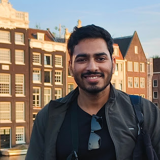

Akhil Abburu
Hi!
I am a PhD candidate at the Indian Institute of Technology Delhi. I work with Prof. Sumitava Mukherjee and Prof. Sumeet Agarwal.
My core research interest lies in judgment and decision making, understanding how people make the choices they do. My current work involves developing and rigorously comparing computational models (using MLE, Bayesian methods, etc.) to better understand phenomena like loss aversion and its variability. I’m also keenly interested in metascience, computational social science, and the intersection of human and artificial intelligence.
Email: akhil.abburu at hss.iitd.ac.in
News
- : Paper accepted at CogSci 2026
- : Submitted Talk accepted at APS 2026
- : Abstracts accepted for summer 2026: SABE 2026, ICAP 2026, IAREP 2026
- : Awarded the Research Excellence Travel Award (₹2,00,000) by IIT Delhi
